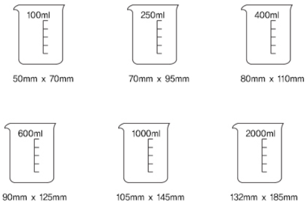

비커사이즈
슬로우 파마씨는 120년 전통을 가진 독일산 비커를 사용합니다.
식물의 모양
식물의 모양은 모두 다릅니다.
사람도 남자와 여자가 존재하지만 우리 모두 다르게 생겼잖아요.
그것처럼 식물도 생명이 있는 존재이기 때문에 모두 다르게 생겼습니다.
이미지와 크기와 모양이 조금 다른 선인장을 받으실 수 있습니다.

( 예시 : 같은 종 다른 모습 )
선물포장
2,000원을 추가하시면 예쁘게 포장된 선인장을 받으실 수 있습니다.
카드메세지는 배송메세지란에 적어주세요.
( 예시 : 선물포장 + 메세지카드 )
주문
선인장과 테라리움 완성품은 최소 3~5일 전 주문해주세요.
배송메세지란에 원하는 배송날짜와 시간(오전, 오후)을 기입해주세요.
카드메세지를 추가하시는 경우, 함께 적어주시면 됩니다.
배송
-
방문픽업
슬로우파마씨는 현재 별도의 오프라인 샵을 운영하고 있지 않습니다.
강남역 근처에 위치한 작업실에서 주문한 상품을 픽업하실 수 있습니다.
픽업가능 시간 : 평일 11시 ~ 6시 ( 방문 최소 이틀 전, 시간예약 필수)
카카오톡 아이디 gurumwind -
택배
선인장과 테라리움 완성품을 제외한 상품은 전국택배 배송이 가능합니다.
-
묶음배송
이미 다른 상품을 배송방법을 선택한 뒤 장바구니에 담아놓으신 분은
나머지 상품을 모두 묶음배송으로 선택해주세요.
* 묶음배송을 선택해야 배송비가 중복부과되지 않습니다. -
서울, 경기 차량배송
선인장과 테라라움 완성품의 경우,
안전을 위하여 서울 / 경기 지역 꽃배달 전문 차량배송만을 이용합니다. -
기타지역_고속버스 택배
선인장과 테라리움 완성품의 경우,
안전을 위하여 서울 / 경기 그 외 지역은 매주 금요일 고속버스 택배배송만 가능합니다.
* 시간지정 불가, 고속터미널 직접픽업.